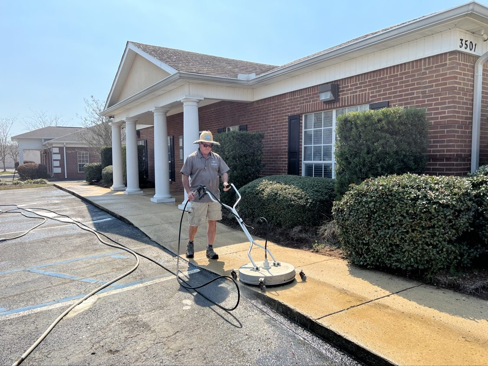

From the blog
Office and Commercial Cleaning in Mobile, AL
November 16, 2026

First impressions matter for a business. A client walks into your office and notices the floors, the restrooms, and the glass on the front door before anyone says a word. In Mobile, humidity and pollen work against you all year, so a commercial space needs a cleaning routine that keeps up with the foot traffic. Here is what a professional office and commercial cleaning covers, and how to set one up for your business.
What a commercial clean covers
- Work areas. Desks, counters, and shared surfaces wiped down, trash emptied, floors swept and mopped, and carpeted areas vacuumed.
- Restrooms. Toilets, sinks, and mirrors cleaned and disinfected, floors mopped, and paper and soap restocked.
- Break rooms and kitchens. Counters, sinks, microwaves, and appliance fronts cleaned, floors mopped, and trash taken out.
- Entryways and lobbies. Glass doors cleaned, floors mopped, and mats shaken out, because this is the first thing a customer sees.
- Tile floors. Commercial tile takes a beating in high traffic areas. A deep steam clean lifts the grime that daily mopping leaves behind in the grout.
- Exterior. The front walk, entry, and parking area can be pressure washed so the outside of your business looks as clean as the inside.
How often to schedule it
Most offices in Mobile do well with a weekly clean, with restrooms and break rooms getting attention every visit. Busy storefronts and medical offices often need two or three visits a week. Tile floors benefit from a deep steam clean every few months, and the exterior walk and entry should be pressure washed at least twice a year, more often if your building sits near a busy road where grime builds up fast.
We work around your hours. Cleaning can happen early in the morning before your team arrives, or after close so nobody is in the way. Tell us your schedule and we build the routine around it.
What it costs
Commercial cleaning is priced by custom quote, because no two businesses are alike. The size of the space, the number of restrooms, the type of flooring, and how many visits a week you need all factor in. The quote is free, and there is no charge to walk the space with us and talk through what you need. Book three or more services together and you get 10% off, the same bundle deal listed on our pay page.
Why local matters
We are a veteran owned Mobile business, not a national franchise sending a different crew every week. The same team shows up, learns your space, and knows what your customers notice first. We serve offices and storefronts across Mobile County, including Midtown Mobile, Tillmans Corner, West Mobile, Daphne, Spanish Fort, and Fairhope on the Eastern Shore. If your business is in Saraland, Satsuma, or Semmes, we come to you too.
Ready for a cleaner workplace?
Kinney Cleaning Services offers free custom quotes for office and commercial cleaning across Mobile County. Veteran owned and operated, backed by 5-Star Google Reviews.
Call (251) 767-0754 Get a Custom Quote